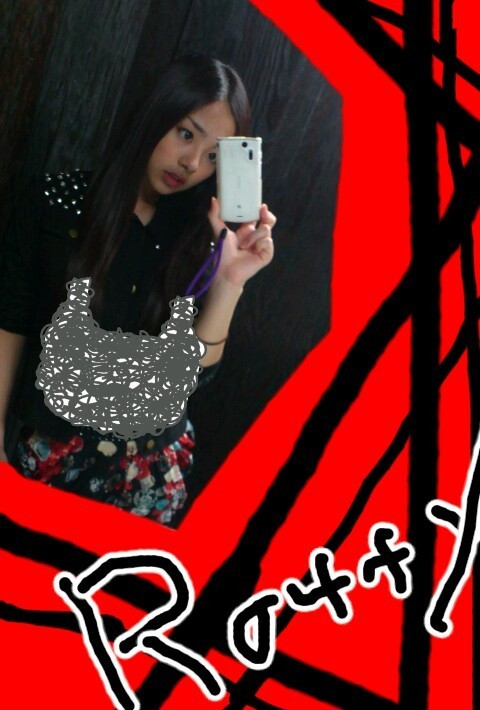

| 2012/04 18 Wed | 川村真洋 メンバーのこと♪ろってぃー★ |

ほいっ♪
こんにちわ・ω・´
まひろってぃーです.
あっ、上の写真、
アフロを逆さにして
付けてみました♪
意味もなく。
なんか、アフロから
あめちゃん♪とかいっぱい
出てきそうだなω・=笑
今日の『メンバーのこと。』
の１人目は....
れいか★!!
れいかとはメンバーで一番
ファッション♪の好みが
似てます(*^^*)
カジュアルだったり
ロックだったり
ちょいサーフだったり...
だってね、
れいか★が名古屋の個握の
時に着て来た服、
まひろが、
渋谷に行った時に
『めちゃ欲しいなぁ〜』って
思ってた服と
上下 まぁーーったく!!
同じのん着てたんです(⌒‐⌒)
びっくりじゃないですかぁ？^ω^
それに、
上に載せた、写メの時
なんですけど、
れいか★がまひろの私服見て
「それめっちゃ可愛いww!!!,
これも可愛いwwww
てか今日のろってぃーの服
超好きwwww!!!!」
って言ってくれたんですω〃
ありがと.・ω・*
めちゃ嬉しいス♪
まひろも、
「れいか★その服可愛いω
まひろそれ好きっ♪」
って よく言っちゃうんです^^
それと、れいか★はキャプテン!
れいか★は頭が良くて
考える力が強くて
言葉をちゃんとまとめて
しゃべることができるんだと
思います^^
れいからしいキャプテンやぁ〜
(⌒‐⌒)
って思います(^^)
....
ぢゃあ そんまま
ゆみ☆のこと
いっちゃいまぁーすω))
最近よく ゆみ☆としゃべったり
遊んだり、電車に乗ったり
するんですけど、
ゆみ☆は
なかなかと言っていい程
突っ込んできますω・´
鋭い突っ込み
素早いツッコミ
(゜゜;)＼(--;)
．．．．
面白いぜぇ...。笑
ゆみ☆は
白の女の子らしい服着た時と
黒でかっこいい感じの時が
あります。♪
まひろはどっちも好きだけど、
黒っぽい服やカジュアルなゆみ☆が
大好きですω☆
ゆみ☆らしいからっ*^^*
ちなみに 個人的に
髪を一つに結んで
カジュアルな服で
ツンとした表情していたら
やばいです〃ω〃
オーディションの時や
初めて会った時の印象とか
書いて行ったら
見ている方も
楽しいんぢゃないかな^^？
と思ったんですけど、
でもまあ、
33人もいたら
この子とはいつから
こんな仲良くなったんやろ？
いつ初めてしゃべったん
やったっけぇ？....
ってのが事実です(>ω<)
ですが、分かるメンバーは
書きますねぇ(⌒‐⌒)
今日のメンバーのこと。
に書いた
れいか★とゆみ☆は
すごいまひろは印象的でしたっ♪
れいか★は 第3次審査の時から
覚えてます。
てかね、一番覚えてます...・ω・*
顔がはっきりしていて
すごいキリっと、した子。♪
オーディションの時、
みんな あまり目立つ服を
着ていない中、
れいか★は
真っピンクのジャージに
まひろ☆は
蛍光色の黄色のスウェットを
履いてて、
二人とも すごい目立っていた
思い出があります=・ω・=
それと ゆみ☆は
初めてちゃんとメンバーを
見れて喋ったりする時に
『この子めっちゃ顔
美人やん・ω・!!』
って思ってゆみのこと
よう見てました＾ω＾
喋べり初めると
めっちゃ喋って
超しっかりしとるやん(*^^*)笑
って思ったけど、
オーディションの時、
皆誰かと喋ったりしてる中
まひろの隣にいた子が
ずっと下向いて１人で
座ってて
喋りかけてみると
いまいち反応がなく
すごいクールな感じやったんが
ゆみ☆やったんです。
一つにシンプルにむすんで
クールな感じの
ゆみ☆がなかなか
好きなんですよねぇ〜〃ω〃笑
まひろだけかなぁ？笑
なんか メンバーのこと
書いてたら 楽しなってきました
=・ω・=
今日の『メンバーのこと』は
どうでしたかー？^^
ぢゃあねっ♪ノシ。